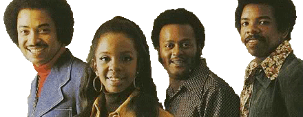

Gladys Knight & the Pips

Gladys Knight & The Pips fueron, sobre todo en los 60 y 70, una elegante manifestación de buen soul, que contaban con una de las voces más prodigiosas y mejor dotadas de la música negra.
La formación estaba liderada por ella, Gladys Knight -también conocida como La Emperatriz del Soul- acompañada por su hermano y dos de sus primos. Formaron parte de las discográficas más punteras del momento; Motown, Columbia o MCA, logrando un buen número de éxitos. Fue en Buddah, tras su marcha de la Motown, cuando la magia de las raices gospel y soul continuaron permaneciendo visibles, alcanzando éxitos como "Midnight Train to Georgia". Una canción a ritmo de tren nocturno, que habla de sueños rotos y de volver a los orígenes sobre los viejos raíles cargados de esperanzas e ilusiones. Todo un número 1, que logró un premio Grammy y convertirse en todo un clásico soul. "I've Got to Use My Imagination", fue otro de sus grandes éxitos, alcanzando altos puestos en las listas y vendiendo más de 1 millón de copias. Sin olvidar otros temas que popularizó con su particular estilo como "Best Thing That Ever Happened to Me". Gladys fue distanciándose del grupo y moviéndose hacia géneros más templados, pero su legado continuo germinando, como con la canción "That's What Friends Are For" junto a Dionne Warwick, Stevie Wonder, y Elton John para recaudar fondos en la ayuda contra el SIDA.
Fueron inducidos en 1996 al Rock and Roll Hall of Fame, y un año después Gladys recibió una estrella en el Paseo de la Fama de Hollywood. Una mujer genuina, con una voz de temple reposada, seductora y saciada de emotividad, que la revista Rolling Stone la clasificó entre las mejores cantantes de todos los tiempos.
Best Thing That Ever Happened To Me
I Heard It Through The Grapevine
Midnight Train To Georgia
I've Got to Use My Imagination
Neither One Of Us (Wants To Be The First To Say Goodbye)
videos.videomusica.es ® is a registered trademark. All content © 2018-2021 by izugarria.
Todos los contenidos del portal incluyendo, imágenes, vídeo, nombres, marcas y logos, son propiedad de sus respectivos dueños.